<!DOCTYPE lake>
<p data-lake-id="ud52cb388" id="ud52cb388" style="text-indent: 2em"><span class="lake-fontsize-12" data-lake-id="u3509dcc9" id="u3509dcc9" style="color: #000000">C语言本身并不难，但环境配置可能成为初学者的第一个障碍。</span></p><p data-lake-id="u017d48d0" id="u017d48d0"><strong><span class="lake-fontsize-12" data-lake-id="u8d4d89ba" id="u8d4d89ba" style="color: #000000">小熊猫Dev-C++</span></strong><span class="lake-fontsize-12" data-lake-id="ueb9d94d4" id="ueb9d94d4" style="color: #000000"> 能让你</span><strong><span class="lake-fontsize-12" data-lake-id="ud1b4ae77" id="ud1b4ae77" style="color: #000000">5分钟安装完成，</span></strong><strong><span class="lake-fontsize-12" data-lake-id="uc2f626a0" id="uc2f626a0" style="color: #DF2A3F">立刻开始写代码</span></strong><span class="lake-fontsize-12" data-lake-id="uc651c2bb" id="uc651c2bb" style="color: #000000">，这才是最重要的！</span></p><p data-lake-id="u75ab8c58" id="u75ab8c58"><span class="lake-fontsize-12" data-lake-id="ubcfcbe43" id="ubcfcbe43" style="color: #000000">等掌握了基础语法后，再考虑更强大的工具（如VS Code、CLion等）。</span></p><hr/><h1 data-lake-id="YXjs3" id="YXjs3"><span data-lake-id="u7eaa5fcc" id="u7eaa5fcc">1&gt; 小熊猫安装</span></h1><p data-lake-id="u0f849738" id="u0f849738"><a data-lake-id="udece7a76" href="https://royqh.net/redpandacpp/" id="udece7a76" rel="noopener noreferrer" target="_blank"><span data-lake-id="u23b4f946" id="u23b4f946">🔗🔗</span><span data-lake-id="u042d5c2c" id="u042d5c2c">小熊猫官方-链接</span></a></p><p data-lake-id="u278350ca" id="u278350ca"><br/></p><p data-lake-id="u5bd83633" id="u5bd83633"></p><p data-lake-id="u6411d774" id="u6411d774"><span data-lake-id="uac22fc06" id="uac22fc06"> 下载安装包（共享文件有提供）:</span></p><p data-lake-id="uf9d727a3" id="uf9d727a3">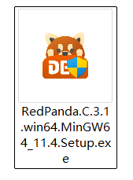</p><p data-lake-id="ua63227ab" id="ua63227ab"><span data-lake-id="u81eba550" id="u81eba550">直接根据提示一步步点...</span></p><p data-lake-id="u5dbb9944" id="u5dbb9944">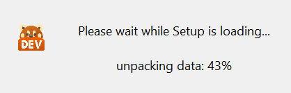</p><p data-lake-id="u3ce2a200" id="u3ce2a200">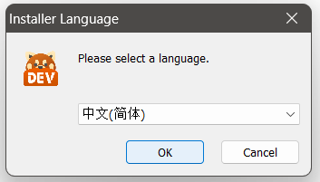</p><p data-lake-id="uf8586d47" id="uf8586d47"></p><p data-lake-id="u85e52ad9" id="u85e52ad9">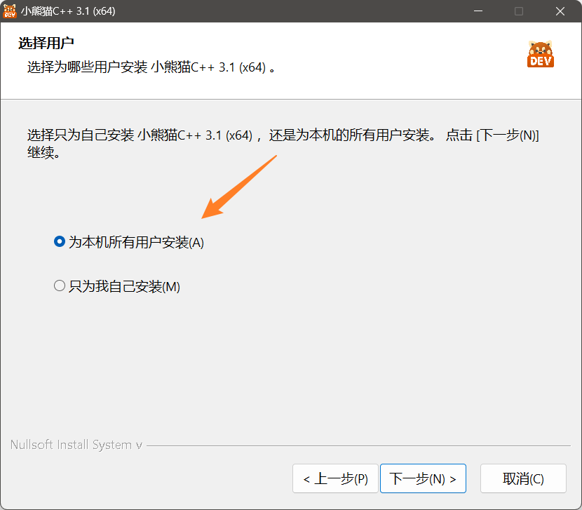</p><p data-lake-id="ufefc0685" id="ufefc0685">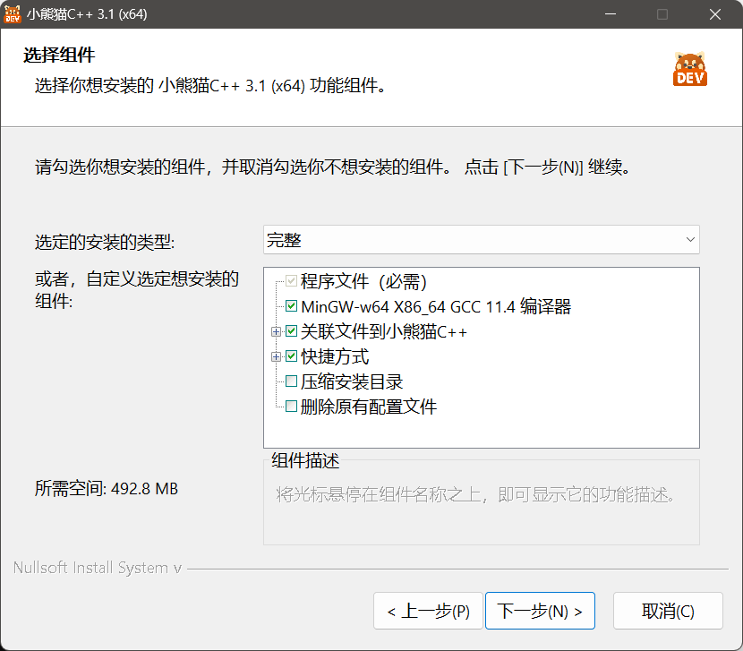</p><p data-lake-id="ud8d96b96" id="ud8d96b96">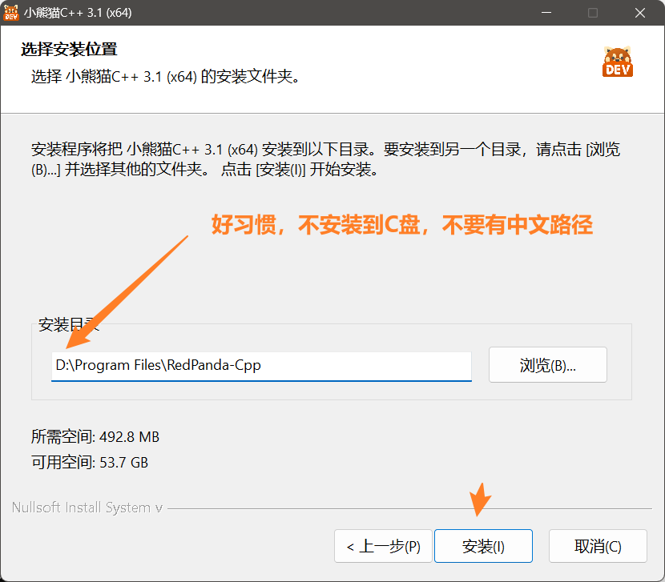</p><hr/><p data-lake-id="uc832b5c2" id="uc832b5c2"><br/></p><p data-lake-id="u1e7b908a" id="u1e7b908a"><span data-lake-id="u2cbbfd55" id="u2cbbfd55">安装完成测试：</span></p><p data-lake-id="ue1e5112d" id="ue1e5112d">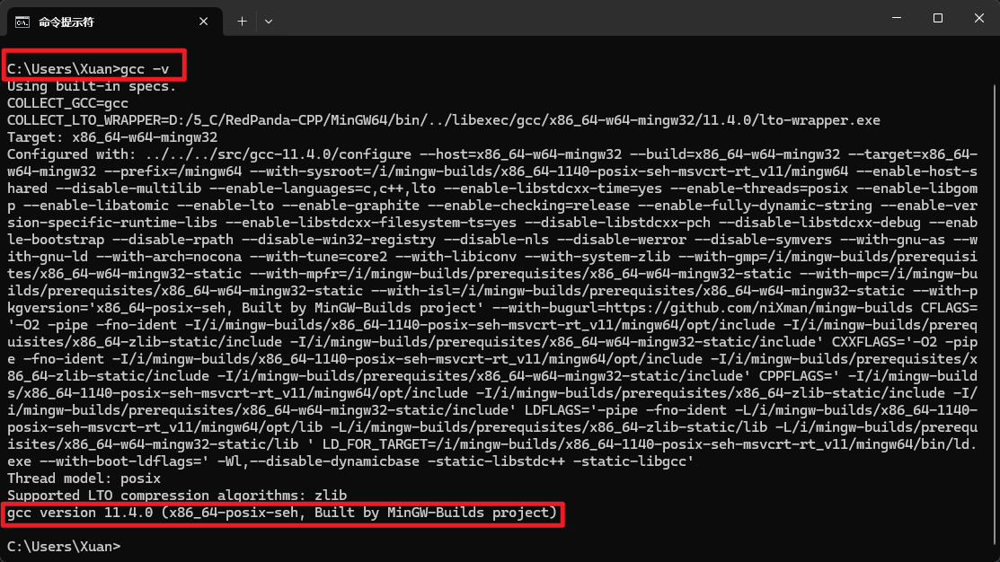</p><hr/><p data-lake-id="ucff76324" id="ucff76324"><span data-lake-id="u54effa70" id="u54effa70">Step 3&gt; 选择主题，默认语言C</span></p><p data-lake-id="u156e20f7" id="u156e20f7">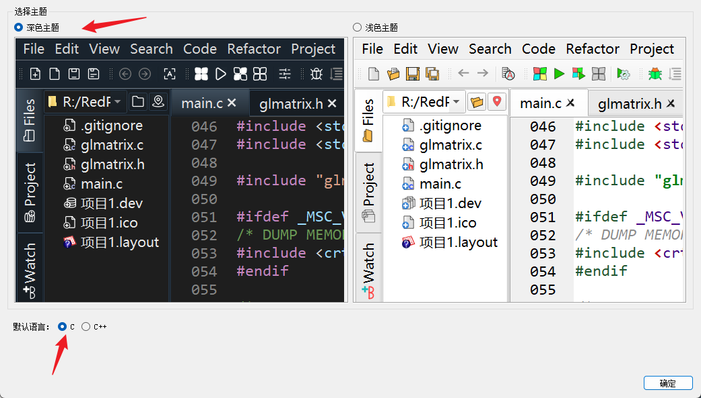</p><p data-lake-id="uf9544aa5" id="uf9544aa5"><br/></p><p data-lake-id="u2a9c4740" id="u2a9c4740">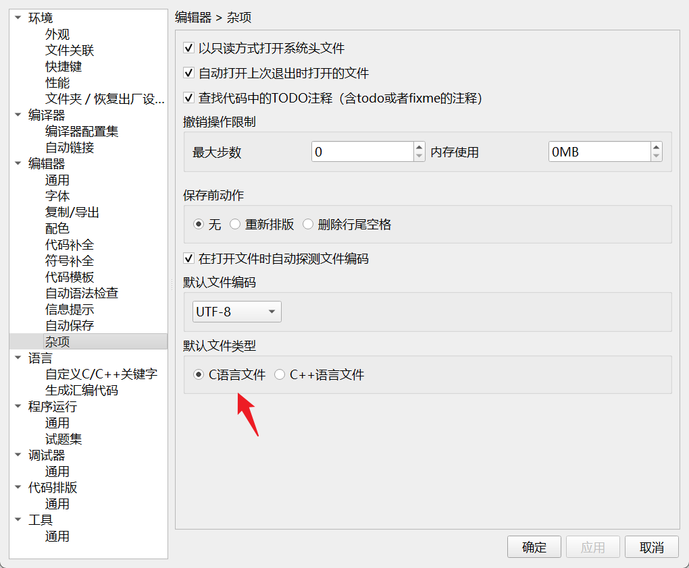</p><h2 data-lake-id="z3b26" id="z3b26"><br/></h2><h1 data-lake-id="XAL6v" id="XAL6v"><span data-lake-id="uaeb79098" id="uaeb79098">2&gt; 快捷键</span></h1><table class="lake-table" data-lake-id="i5Iig" id="i5Iig" margin="true" style="width: 621px" width-mode="contain"><colgroup><col width="121"/><col width="250"/><col width="250"/></colgroup><tbody><tr data-lake-id="uf627d86a" id="uf627d86a"><td data-lake-id="u00e66601" id="u00e66601" style="background-color: #ECAA04; vertical-align: middle"><p data-lake-id="ufba01e18" id="ufba01e18" style="text-align: center"><span data-lake-id="ub522d648" id="ub522d648">序号</span></p></td><td data-lake-id="u8c593939" id="u8c593939" style="background-color: #ECAA04; vertical-align: middle"><p data-lake-id="u774fc7dd" id="u774fc7dd" style="text-align: center"><span data-lake-id="u5b832538" id="u5b832538">功能</span></p></td><td data-lake-id="u50a4e285" id="u50a4e285" style="background-color: #ECAA04; vertical-align: middle"><p data-lake-id="u0e5d73b3" id="u0e5d73b3" style="text-align: center"><span data-lake-id="uf33726ee" id="uf33726ee">快捷键</span></p></td></tr><tr data-lake-id="ue9b619ab" id="ue9b619ab"><td data-lake-id="u3c342156" id="u3c342156" style="vertical-align: middle"><p data-lake-id="ubb643d90" id="ubb643d90"><span data-lake-id="u48629708" id="u48629708">1</span></p></td><td data-lake-id="ue87152f8" id="ue87152f8" style="vertical-align: middle"><p data-lake-id="u02b62a44" id="u02b62a44"><span data-lake-id="ue91eada8" id="ue91eada8">移动当前行</span></p></td><td data-lake-id="u11634ba5" id="u11634ba5" style="vertical-align: middle"><p data-lake-id="u1c370c86" id="u1c370c86"><span data-lake-id="udede7737" id="udede7737">Ctrl+Shift+</span><span data-lake-id="u0817cf61" id="u0817cf61">⬆</span><span data-lake-id="u0d7e286b" id="u0d7e286b">/</span><span data-lake-id="u61462252" id="u61462252">⬇</span></p></td></tr><tr data-lake-id="u2990fac7" id="u2990fac7"><td data-lake-id="uda86f722" id="uda86f722" style="vertical-align: middle"><p data-lake-id="u1556c6f5" id="u1556c6f5"><span data-lake-id="ud95429bd" id="ud95429bd">2</span></p></td><td data-lake-id="ued996e62" id="ued996e62" style="vertical-align: middle"><p data-lake-id="u51d61e75" id="u51d61e75"><span data-lake-id="ue690cdd9" id="ue690cdd9">复制当前行</span></p></td><td data-lake-id="u7a675a6d" id="u7a675a6d" style="vertical-align: middle"><p data-lake-id="u81e56c5c" id="u81e56c5c"><span data-lake-id="u85a3245a" id="u85a3245a">Ctrl+d</span></p></td></tr><tr data-lake-id="ub7c2a286" id="ub7c2a286"><td data-lake-id="uc020c5af" id="uc020c5af" style="vertical-align: middle"><p data-lake-id="u4c7c0d27" id="u4c7c0d27"><span data-lake-id="uda35318a" id="uda35318a">3</span></p></td><td data-lake-id="u0468934c" id="u0468934c" style="vertical-align: middle"><p data-lake-id="u14567133" id="u14567133"><span data-lake-id="u3deb3163" id="u3deb3163">块选择</span></p></td><td data-lake-id="ufa59b712" id="ufa59b712" style="vertical-align: middle"><p data-lake-id="u234de4e7" id="u234de4e7"><span data-lake-id="u7c3316bf" id="u7c3316bf">Shift+alt+</span><span data-lake-id="u8fccb305" id="u8fccb305">⬆</span><span data-lake-id="u388cfb43" id="u388cfb43">/</span><span data-lake-id="ue7206bc4" id="ue7206bc4">⬇</span><span data-lake-id="u5c7cd390" id="u5c7cd390">/</span><span data-lake-id="ue32fa22a" id="ue32fa22a">⬅</span><span data-lake-id="ud23bb508" id="ud23bb508">/</span><span data-lake-id="ua7c52fdc" id="ua7c52fdc">➡</span><span data-lake-id="uc0a1704d" id="uc0a1704d"><br/></span><span data-lake-id="u1e7fd3fb" id="u1e7fd3fb">alt+【鼠标左键】</span></p></td></tr><tr data-lake-id="u13d1e79c" id="u13d1e79c"><td data-lake-id="ufd26d4c0" id="ufd26d4c0" style="vertical-align: middle"><p data-lake-id="u7f5bd155" id="u7f5bd155"><span data-lake-id="u5d8c1627" id="u5d8c1627">4</span></p></td><td data-lake-id="u0ce74860" id="u0ce74860" style="vertical-align: middle"><p data-lake-id="u4bf6de13" id="u4bf6de13"><span data-lake-id="u2ff1d018" id="u2ff1d018">单词跳动</span></p></td><td data-lake-id="u64dde62c" id="u64dde62c" style="vertical-align: middle"><p data-lake-id="ufc382a1d" id="ufc382a1d"><span data-lake-id="ud8028e92" id="ud8028e92">ctrl+</span><span data-lake-id="ua24cc4b5" id="ua24cc4b5">⬆</span><span data-lake-id="ucbd258f2" id="ucbd258f2">/</span><span data-lake-id="ua5927d5e" id="ua5927d5e">⬇</span><span data-lake-id="ue2b61401" id="ue2b61401">/</span><span data-lake-id="ue6496d93" id="ue6496d93">⬅</span><span data-lake-id="u03f01db8" id="u03f01db8">/</span><span data-lake-id="uadaf5ac5" id="uadaf5ac5">➡</span></p></td></tr><tr data-lake-id="u03fb91bd" id="u03fb91bd"><td data-lake-id="ucf8ee45a" id="ucf8ee45a" style="vertical-align: middle"><p data-lake-id="uc3d9e89e" id="uc3d9e89e"><span data-lake-id="ud48434d5" id="ud48434d5">5</span></p></td><td data-lake-id="uc46ecd75" id="uc46ecd75" style="vertical-align: middle"><p data-lake-id="uca1a582b" id="uca1a582b"><strong><span class="lake-fontsize-12" data-lake-id="u1340edf8" id="u1340edf8" style="color: initial">插入新行</span></strong></p></td><td data-lake-id="u17a6c90e" id="u17a6c90e" style="vertical-align: middle"><p data-lake-id="ueb74394d" id="ueb74394d"><strong><span class="lake-fontsize-12" data-lake-id="u711b888e" id="u711b888e" style="color: initial">Ctrl+Enter</span></strong></p></td></tr></tbody></table><p data-lake-id="u3e0c9ffe" id="u3e0c9ffe"><br/></p><h1 data-lake-id="HGTa5" id="HGTa5"><span data-lake-id="ub2e57b2b" id="ub2e57b2b">3&gt; gcc 常用命令</span></h1><span class="yuque-card-unsupported">[codeblock]</span><p data-lake-id="u2c64bca3" id="u2c64bca3"><br/></p><span class="yuque-card-unsupported">[codeblock]</span><p data-lake-id="uf1b3f160" id="uf1b3f160"><br/></p><span class="yuque-card-unsupported">[codeblock]</span><p data-lake-id="u7208e954" id="u7208e954"><br/></p><span class="yuque-card-unsupported">[codeblock]</span><p data-lake-id="u8307f1e2" id="u8307f1e2"><br/></p><span class="yuque-card-unsupported">[codeblock]</span><p data-lake-id="u5573cfd1" id="u5573cfd1"><br/></p><p data-lake-id="u1059e9e0" id="u1059e9e0"><span data-lake-id="u702280ec" id="u702280ec">命令行显示中文乱码，修改命令：chcp 65001；</span></p><p data-lake-id="u7fadb002" id="u7fadb002"><br/></p><p data-lake-id="uefa2459c" id="uefa2459c"><span data-lake-id="ufe077b5c" id="ufe077b5c">Windows命令提示符（CMD）</span></p><span class="yuque-card-unsupported">[codeblock]</span><ul list="ue2a6ca85"><li data-lake-id="ube9ec8b6" fid="u7cc5982d" id="ube9ec8b6"><span data-lake-id="u7376f325" id="u7376f325">Tab键自动补齐；</span></li><li data-lake-id="u53d8ddfb" fid="u7cc5982d" id="u53d8ddfb"><span data-lake-id="u24fb6b9c" id="u24fb6b9c">⬆</span><span data-lake-id="uc19842f9" id="uc19842f9">和</span><span data-lake-id="u607a86d7" id="u607a86d7">⬇</span><span data-lake-id="ufd8d07ae" id="ufd8d07ae">键查找历史命令；</span></li></ul><hr/><h1 data-lake-id="jaxx8" id="jaxx8"><span data-lake-id="u83a0ecff" id="u83a0ecff">4&gt; gcc -v命令无法使用</span></h1><h2 data-lake-id="SGzZm" id="SGzZm"><span data-lake-id="u10a37453" id="u10a37453">Step 1&gt; 找到小熊猫工具路径</span></h2><p data-lake-id="u855791f1" id="u855791f1">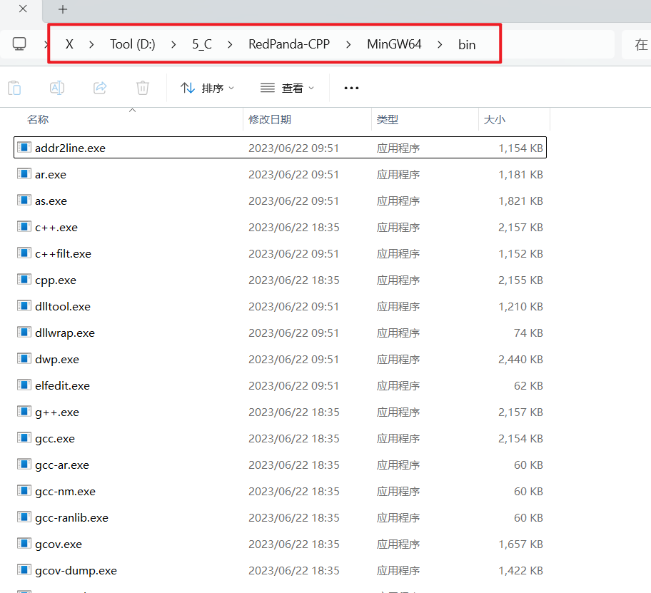</p><p data-lake-id="u14bf8df7" id="u14bf8df7"><span data-lake-id="ua0421316" id="ua0421316">找到自己的安装路径：</span></p><p data-lake-id="u9e0813fb" id="u9e0813fb"><span data-lake-id="ufd858ea4" id="ufd858ea4">D:\5_C\RedPanda-CPP\MinGW64\bin</span></p><h2 data-lake-id="vhETq" id="vhETq"><span data-lake-id="u1086542c" id="u1086542c">Step 2&gt; 高级系统设置</span></h2><p data-lake-id="ua39004fc" id="ua39004fc">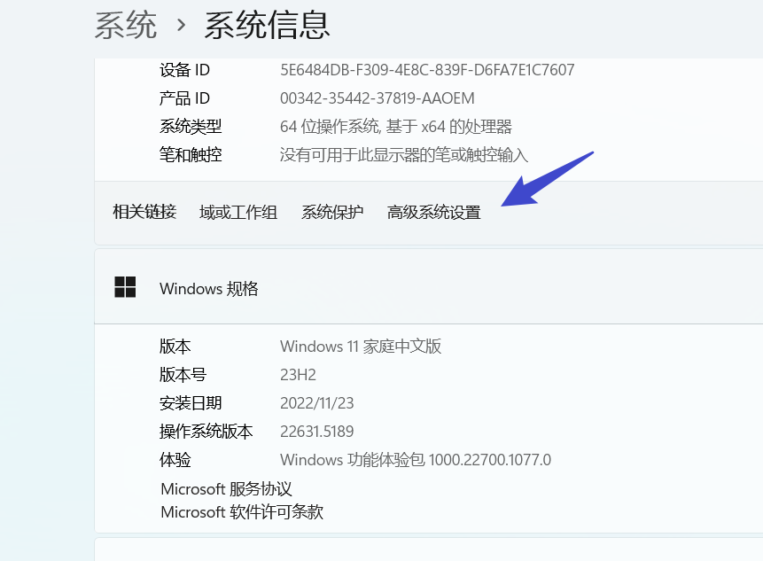</p><hr/><h2 data-lake-id="IxWJs" id="IxWJs"><span data-lake-id="u74822828" id="u74822828">Step 3&gt; 设置 环境变量</span></h2><p data-lake-id="uf0b4aad5" id="uf0b4aad5">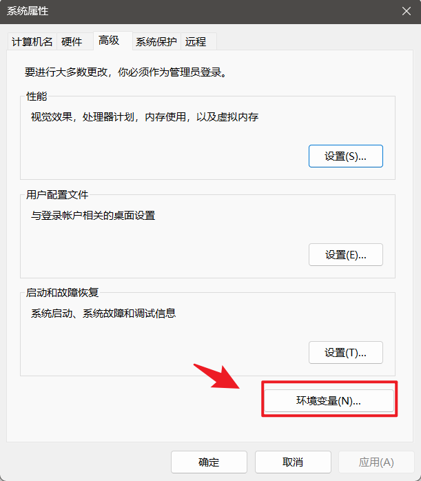</p><hr/><h2 data-lake-id="tILcQ" id="tILcQ"><span data-lake-id="u56d5b6d8" id="u56d5b6d8">Step 4&gt; 编辑Path</span></h2><p data-lake-id="u7d330251" id="u7d330251">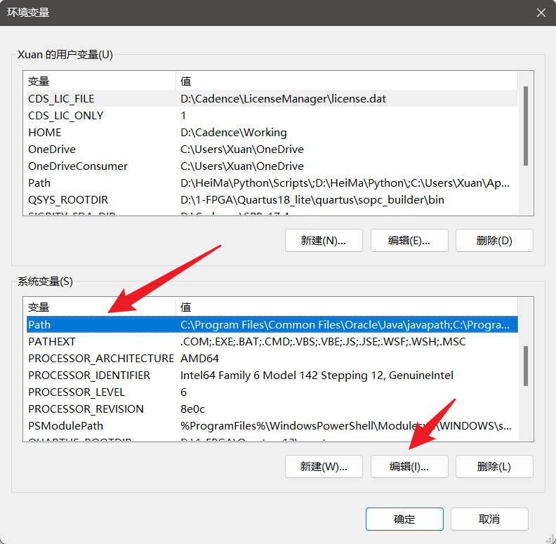</p><hr/><h2 data-lake-id="mhwn9" id="mhwn9"><span data-lake-id="u6af79d54" id="u6af79d54">Step 5&gt; 新建环境变量</span></h2><p data-lake-id="ude15c511" id="ude15c511">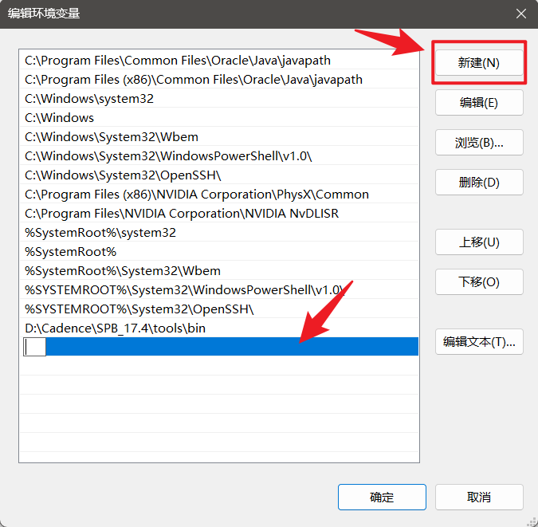</p><p data-lake-id="u2231b4c5" id="u2231b4c5"><span data-lake-id="ud6d8b19a" id="ud6d8b19a">拷贝路径，点击确定</span></p><p data-lake-id="u856daf74" id="u856daf74">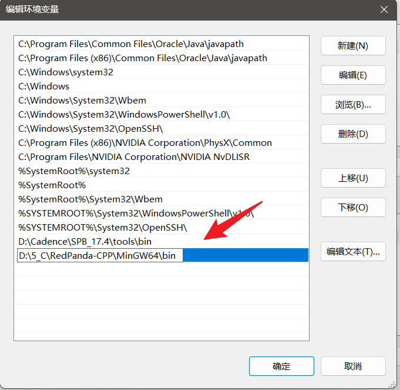</p><hr/><h1 data-lake-id="DrA1y" id="DrA1y"><span data-lake-id="u257273c6" id="u257273c6">5&gt; 代码模板</span></h1><ol list="uad539ab5"><li data-lake-id="uea08e35f" fid="u70296563" id="uea08e35f"><span data-lake-id="u6bedc80c" id="u6bedc80c">打开设置选项</span></li></ol><p data-lake-id="ubb4f87ad" id="ubb4f87ad">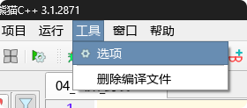</p><ol list="u95818cce" start="2"><li data-lake-id="ubb390c4c" fid="u77bd72c8" id="ubb390c4c"><span data-lake-id="u03ce3e2a" id="u03ce3e2a">新建模板代码</span></li></ol><p data-lake-id="ub300604a" id="ub300604a">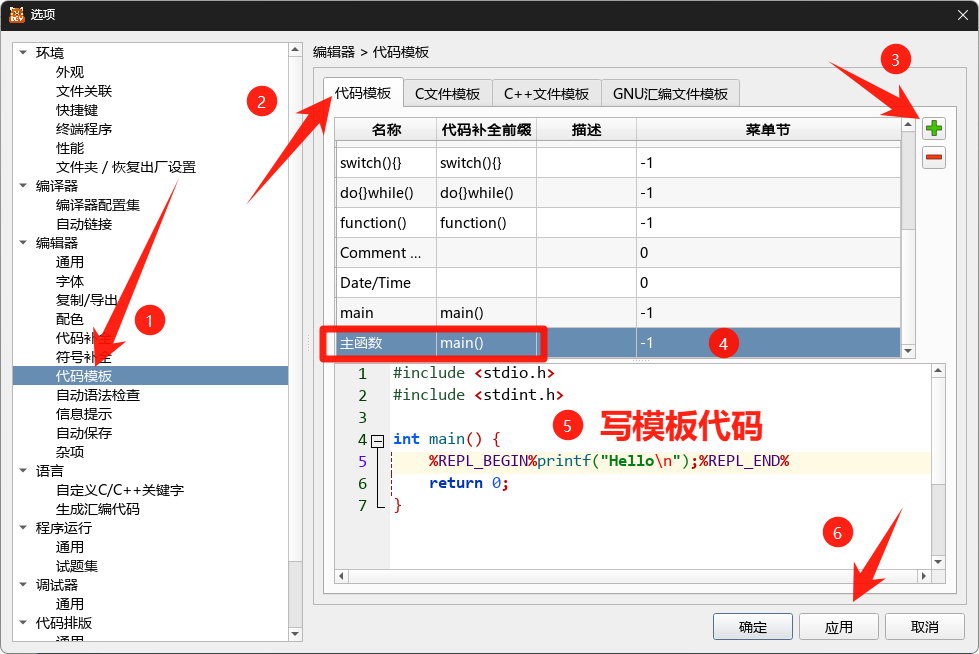</p><p data-lake-id="ub243d26d" id="ub243d26d"><span data-lake-id="udfe2244f" id="udfe2244f">模板代码如下：</span></p><span class="yuque-card-unsupported">[codeblock]</span>